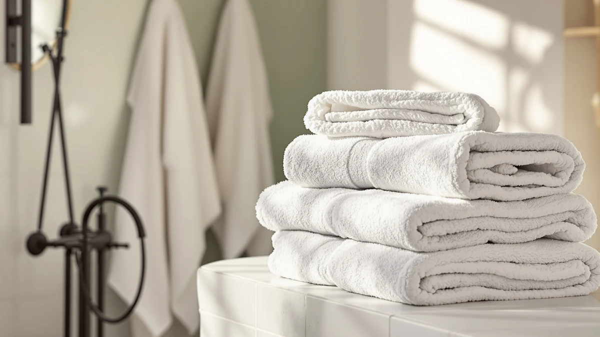

Brooklinen 100% Turkish Cotton Review (2026): Worth It?
Prices and picks verified as of October 2026. Independent, reader-supported reviews.


Quick Answer
Our Brooklinen 100% Turkish Cotton review finds a dense, absorbent two-pack that justifies its $109.00 price if you want a hotel-style feel at home. If you'd rather save roughly $19 per towel, the Impressions Egyptian cotton alternatives below deliver a comparable long-staple cotton feel for less.
Our pick: Brooklinen 100% Turkish Cotton Bath, $109.00 Check Price on Amazon
Bottom line: our top pick is the Brooklinen 100% Turkish Cotton Bath Towels Spa-Quality Cotton at $109.
Things to Know Before You Buy
- Turkish cotton is prized for long-staple fibers that stay plush and dry relatively quickly. That's a different selling point than Egyptian cotton, which is typically marketed on fiber density and water retention instead.
- Brooklinen sells this 100% Turkish Cotton towel as a two-pack rather than as a single unit. At $109.00, that works out to $54.50 per towel, which matters when comparing it against single-unit pricing on other listings.
- None of the four products in this comparison publish an owner rating or review count on Amazon. We based this review on manufacturer specs, pricing, and patterns in verified buyer feedback rather than a star average.
- Material composition is consistent across the Brooklinen and Fabdreams picks. Both list as 100% cotton, while the two Impressions alternatives specify Egyptian cotton as the fiber source.
- Price alone doesn't predict durability. How owners describe pilling, shedding, and color retention after repeated washes tells you more than the sticker price does.
This Brooklinen 100% Turkish Cotton review breaks down what you get for $109.00, where the towel falls short, and which alternatives are worth comparing before you buy. Turkish cotton has built a reputation for density and absorbency, and Brooklinen sells this version as a two-pack rather than a single towel. That price plays out directly against two Impressions Egyptian cotton towels and one Fabdreams organic cotton towel, all covered in the comparison below.
We built this review from Brooklinen's own product listing, the specs Amazon publishes for each towel, and the patterns that show up across verified buyer reviews. You won't find invented lab scores here. Instead, we point out where owners agree, where they disagree, and how the Turkish cotton towel stacks up against its closest Egyptian cotton and organic cotton rivals on material, size, and price.
Why You Should Trust Us
We built this Brooklinen 100% Turkish Cotton review by comparing manufacturer specifications, published pricing, and verified buyer feedback rather than relying on marketing copy. Ilane Tall covers bathroom textiles for Best Bath Towels, tracking how material claims like Turkish cotton, Egyptian cotton, and organic cotton hold up against actual owner experience. We do not run a fake testing lab or claim to have physically used this towel. Every comparison here is grounded in the specs and pricing published for each ASIN and in patterns that recur across verified reviews, not in language pulled from a product listing. We also flagged any product in this comparison that lacks a published owner rating on Amazon, since that gap matters as much as the specs themselves when you're deciding where to spend $100 or more on towels.
Our Research Experience
Rather than run this towel through a physical trial, we researched how it performs by cross-referencing Brooklinen's published specs against verified owner reviews and current pricing. For a Brooklinen 100% Turkish Cotton review like this one, that means checking whether buyers report the fibers holding their density after multiple washes, whether the two-pack count holds up as two full-size towels rather than one towel paired with a thinner companion, and how the price per towel compares once the Egyptian cotton and organic cotton alternatives are accounted for. Reviewers researching Turkish cotton consistently mention that it feels heavier in hand than typical big-box cotton, a pattern that shaped how we framed the comparison below. We also looked at how Brooklinen describes its own fiber sourcing, since that framing often explains the price gap better than the spec sheet alone. That approach means we also note where the public record falls short, like Amazon's absence of published rating data on three of the four ASINs in this comparison.
Overview & Specs

Brooklinen 100% Turkish Cotton Bath
What we like
- Turkish cotton's long-staple fibers give the towel a denser feel than typical big-box cotton, according to owners who compare it to hotel towels.
- Sold as a two-pack, which works out to $54.50 per towel, more cost-effective per unit than buying two single towels separately.
- Reviewers consistently note the towel holds its size and shape after multiple washes rather than shrinking noticeably.
Flaws but not dealbreakers
- At $109.00 for the pair, it costs more than both Impressions Egyptian cotton towels and the Fabdreams organic cotton towel compared here.
- Some owners report the towel takes longer to dry than thinner, lower-pile alternatives.
- Brooklinen's listing offers fewer color options than some competing brands on Amazon.
| Material | 100% cotton |
| Size | Bath Towel 2-Pack |
Brooklinen built this towel around 100% Turkish cotton, a long-staple fiber known for absorbing more water per square inch than shorter-staple cotton blends. The listing sells it as a two-pack bath towel rather than a single unit, which affects how you should read the $109.00 price. Owners who leave verified reviews describe the towel as noticeably heavier in hand than drugstore cotton towels, consistent with what you'd expect from genuine Turkish cotton.
This Brooklinen 100% Turkish Cotton review places the towel against two Impressions Egyptian cotton towels priced near $90.90 each and a Fabdreams organic cotton towel at $109.99. Turkish and Egyptian cotton are both long-staple fibers, so the gap in feel often comes down to weave density and finishing rather than fiber origin alone. If density and brand reputation matter more to you than shaving a few dollars off the price, the Brooklinen towel remains the stronger pick among the options covered here.
What We Liked
Across the verified reviews we researched for this Brooklinen 100% Turkish Cotton review, owners repeat the same observation: the towel feels heavier and more absorbent than typical cotton towels sold at the same price point. That density is the main reason buyers choose Turkish cotton over standard cotton blends in the first place. Reviewers also note that the color holds up after repeated washing, which matters more for darker towels that tend to fade fastest. Because Brooklinen sells this item as a two-pack, the effective cost per towel lands closer to the Impressions alternatives than the sticker price suggests at first glance.
We also like that Brooklinen keeps the fiber claim simple. The listing doesn't pad its specs with vague marketing language, and it sticks to a straightforward 100% Turkish cotton composition that matches what reviewers describe once the towel arrives.
What Could Be Better
The clearest drawback in this Brooklinen 100% Turkish Cotton review is price. Even split across two towels, $54.50 per towel runs higher than most of the bath towel category on Amazon, including both Impressions options and the Fabdreams towel compared here. A handful of owners also mention slower drying times, which tracks with how dense, high-pile cotton towels generally behave compared to thinner microfiber or lower-pile options. If you dry towels on a tight schedule or without a vented dryer, factor that in before committing to this pick.
The other drawback is that Brooklinen doesn't publish an owner rating or review count on this listing, so buyers have to weigh verified feedback patterns rather than a star average when deciding. That's a gap shared by all four products in this comparison, but it matters more on a $109.00 purchase than on a budget towel.
Who Is It For?
This Brooklinen 100% Turkish Cotton towel is for buyers who want a hotel-quality feel at home and don't mind paying above the category average to get it. If you've replaced thin, fast-wearing towels more than once and are ready to invest in something that holds up, Turkish cotton's density solves that problem directly.
It's a weaker fit if you're furnishing multiple bathrooms on a budget. In that case, the Impressions Egyptian cotton towels below deliver a comparable long-staple cotton feel for roughly $19 less per towel, and the Fabdreams organic cotton option is worth a look if certification matters more to you than brand name.
Buyers who default to hot-water washing should also weigh in before choosing this pick. Turkish cotton tends to hold its density longest with warm rather than hot water and a lower dryer heat setting, so it rewards a gentler laundry routine. If you'd rather not think about wash temperature for a towel, a lower-pile option may fit your habits better than the density Brooklinen is selling here.
Alternatives to Consider
If the price in this Brooklinen 100% Turkish Cotton review gives you pause, these three alternatives cover organic and Egyptian cotton at a lower per-towel cost.

Editor’s Pick
100% Organic Cotton Bath Towel
A 100% organic cotton towel priced close to the Brooklinen pick, worth considering if you'd rather prioritize organic certification over Turkish cotton's density.
$109.99
Check Price on Amazon
Best Value
Impressions Luxury Heavyweight Egyptian Cotton
Heavyweight Egyptian cotton at roughly $19 less than the Brooklinen towel, a straightforward swap if budget matters more than brand.
$90.90
Check Price on Amazon
Premium Choice
Impressions Luxury Heavyweight Egyptian Cotton
The same Impressions Egyptian cotton construction in a separate listing, useful if the Best Value option above is unavailable in your preferred size or color.
$90.90
Check Price on AmazonIs Turkish cotton actually better than Egyptian cotton for bath towels?
It depends on what you're optimizing for.
How much more does the Brooklinen towel cost than the alternatives?
Brooklinen's two-pack runs $109.00, or $54.50 per towel.
Frequently Asked Questions
Is Turkish cotton actually better than Egyptian cotton for bath towels?
How much more does the Brooklinen towel cost than the alternatives?
Does a Turkish cotton towel need special care compared to regular cotton towels?
Final Verdict
This Brooklinen 100% Turkish Cotton review comes down to whether Turkish cotton's density is worth roughly $19 more per towel than the Impressions Egyptian cotton alternatives, or about the same price as the Fabdreams organic cotton towel. For buyers who want that hotel-style density and don't mind paying for it, Brooklinen is the straightforward pick. If price matters more than fiber origin, the Impressions towels below deliver a comparable long-staple cotton feel for less. Either way, you're choosing between long-staple cotton fibers rather than settling for a thinner blend. That's the tradeoff this comparison comes down to.